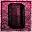

Morrowind:Enchanting
Morrowind:Skills:Magic
| Skill: Enchant |
|---|
|  |
|
Governing Attribute:
Intelligence |
| Specialization: Magic |
|
Increase:
Recharge Item: +5.0 Create Magic Item: +5.0 Use Magic Item: +0.1 Cast When Strikes: 0 |
Contents
- Character Creation
- Trainers
- Books
- Factions
- Recharging items
- Using Enchanted Items
-
Enchanting items
- How to enchant
- Souls
- Items
- Spells and Spell Effects
The enchant discipline concerns imbuing physical items with magical properties called enchantments. The simplest enchantment are magical scrolls with a single enchantment that are destroyed with one use. The most complex enchantments are enchanted artifacts, objects with one or more magical effects powered by built-in soul gems. Skilled enchanters also use enchanted items more efficiently, with less waste of the magicka trapped in the soul gems.
Enchanting is the process of permanently applying a magical effect to an item by harnessing the power of a creature's soul. This skill governs the creation, use, and recharging of enchanted items. Skilled enchanters are more likely to be successful at creating new items, their enchanted items use less power and are recharged more efficiently by soul gems.
Character Creation
The following races receive bonuses to their Enchant skill:
- +10 Bonus: High Elf
- Sorcerer, Witchhunter
- Bard, Battlemage, Knight, Mage, Spellsword
Trainers
The Master Trainer for Enchant is Qorwynn in Indoranyon. Be aware that Qorwynn is hostile, and will attack you on sight. Using a calm spell and bribing him up to the point that he doesn't attack you anymore is the simplest way to receive training from him, but alternatively you can use 100% chameleon and he will happily speak to you. Unfortunately, there are very few other trainers of this skill, and none of them train to a particularly high level. See Enchant Trainers for the complete list.
You can practice yourself by creating enchanted items, by refilling them, or by using them. Wearing items with "Constant Effect" enchantments and using weapons with "Cast when Strike" effects won't train Enchant. To train faster, create an enchanted item with the strongest soul possible, and a spell with a casting cost of 1. You will be able to cast said spell many times until charges are depleted, and your skill will improve significantly. Using multiple items and the Azura's Star to refill empty items will further help training. When you have Azura's Star, you can also use three enchanted items to quickly summon a ghost, cast soultrap on it, kill it, and then use its soul to recharge one of the items. Quick-binding the three spells will help to cycle faster.
Books
The following books will increase your Enchant skill:
Factions
The following factions include Enchant as one of their favored skills:
Recharging items
You can recharge enchanted items by dragging a filled gem on your character in the inventory menu. Recharge efficiency depends on your skill and luck. Gathering random souls with Azura's Star and recharging enchanted items is an effective and efficient way to improve the Enchant skill. Recharging the Mace of Molag Bal will provide a portable and potentially unlimited source of Magicka
Using Enchanted Items
The amount of charge depleted by an activation of a magical item with a Cast When Used or Cast When Strike enchantment decreases as the Enchant skill increases. The effect is described by the following formula.
effectiveCost = baseCost*(1.1 - enchant/100)
Which means that at level 5 Enchant the charge depletion is actually more than the base cost, however, it then decreases at 1% per level increase. At level 110 Enchant, the above formula results in a zero cost, but the game enforces a 1 cost minimum.
Enchanting items
Why Enchant?
Enchanting items can be one of the most exciting - and powerful - features in the game. With the wide selection of spell effects and items to enchant, the possibilities are practically endless.
The NPC enchanting menu |
Enchanted items have multiple advantages :
- They serve as an extra reservoir of Magicka, allowing you to cast spells without spending Magicka.
- They recharge themselves slowly but constantly, even in city areas where you can't recover Magicka without accessing a bed, or around enemies where you aren't allowed to Rest. An item with a 1 point enchantment of Bound Weapon for 18 seconds will actually recharge that 1 point before the spell effect wears off, even with low Enchant skill. With a higher Enchant skill, you can use enchanted items more times before their charge is exhausted.
- They never fail and have a zero casting time, so you can stack damage or healing effects faster than by casting spells, which have a short but noticeable cool down. Since enchanted items have 100% casting rate, if you enchant items then your casting chance is effectively based on your Enchant skill, rather than your skill in the relevant spell school. For example, your Mysticism skill may be too low to predictably cast an Almsivi Intervention spell when you need one, but if you get an enchanted item with the spell, you can cast it without any skill in Mysticism whatsoever. Furthermore, you only make your skill check once - when you enchant the item - rather than whenever you cast a spell.
- You can create Constant Effect items, such that merely equipping them gives you the effect(s), without needing to cast anything. Note that Items with constant-effect enchantments must be manually equipped. Thus, if you normally wear a helm that provides constant-effect Waterbreathing and auto-equip another helm that does Drain Magicka on Target by selecting this item from the Magic menu, you will need to drag your Waterbreathing helm back onto your character "paper doll" in the Inventory window to use its effect again. Items are either enchanted as Constant Effect or not; CE cannot be mixed with temporary effects on the same item.
Although you are limited to wearing only one amulet, two rings, etc. at a time, the game allows you to use almost any magical item that you have in your inventory by automatically equipping it for you when you use it by selecting it from the Magic menu (items appear in that list below spells). Overall, once your Enchant skill becomes high enough, you might never cast a spell again.
How to enchant
To enchant an item, you will need:
- An enchanter, either a NPC or yourself
- A soul gem containing a soul
- An item to be enchanted
- A known spell effect you wish to apply
Enchanting with a NPC
NPC have a 100% success rate, but are extremely expensive. Find the local Mages Guild or an enchanter, and ask them about 'Enchanting' in the dialogue menu. An enchanting menu will prompt (see picture on the right), asking for spell effects, an item to enchant, a full gem to consume, the name of the enchanted item, and showing the price to pay. They will notice if you ask them to enchant using a soul gem or an item you stole from them. Due to how the game defines "stolen", this really means any soul gem of the same type as one you have stolen from them. Stealing soulgems from a Mages Guild is particularly risky since they may have faction ownership, such that any Mages Guild enchanter will treat that soul gem type as stolen from them. Consequently, independent enchanters are safer for light-fingered characters to employ. You can get all your money back from an NPC enchanter if they have the Barter option :
- BEFORE ENCHANTING, make sure the vendor isn't at either 0 or its max selling money. If it is, the money you spend on the enchant sometimes doesn't get added its purse.
- buy the enchantment
- sell them expensive items after getting something enchanted, and get your money back.
Enchanting yourself
The cheapest way is also more risky. Just drop a filled soul gem onto your character's doll (like equipping it) to access the enchanting menu. You can either recharge a magic item or enchant a new one this way. Using this method costs no gold, but there is a pretty high rate of failure which will destroy the soul gem in the process. Even with a maxed out Enchant skill and Intelligence, you can only successfully enchant relatively low level powers (up to 30 enchant points with a moderately high failure rate). Using Alchemy or other magical means to boost Intelligence into the hundreds or thousands will allow you to attempt more complex enchantments. An Intelligence fortified to 4900 or an Enchant skill fortified to 1225 will be enough to guarantee the success of any enchantment. See below for further details about enchanting mechanics.
Enchanting success rate
The percent chance to successfully self-enchant an item is
%Success = (8×Enchant + 2×Intelligence + Luck - 20×"Enchantment points"×(1 + "Effect is constant"))/8
This means the net enchantment difficulty (points combined with constancy, which doubles the difficulty) matters 2.5 times as much as Enchant skill, which matters 4 times as much as Intelligence, which matters 2 times as much as Luck. Even at maximum values for skill and both attributes, you'll be subtracting the enchantment's difficulty from 137.5, meaning you can only succeed 100% of the time with effects with a points cost of 15 or less, or 7 or less for Constant Effect enchantments. At first, you will only be able to make the most basic of enchanted items successfully. You should practice first by using or recharging already-enchanted items. Even after maxing your Enchant, Intelligence and Luck, the most advanced enchantments such as Constant Effect will still be out of reach for you. The only way to successfully create these higher end enchantments without paying large amounts of gold to professional enchanters is to use magical effects to artificially increase your Enchant, Intelligence, or Luck. The most effective way to do this is via Alchemy.
You can also create an "enchanting suit", by creating items with Fortify Enchant, Intelligence, and/or Luck enchantments. You'll have to start with "Cast when Used" items, and with relatively low values, but if you keep at it, you'll be able to gradually build up a better and better Enchanting Suit, since each piece will increase your ability to make better pieces. (You can sell the weaker pieces that you're not using anymore.) Eventually, you can build a full suit of Fortify Intelligence clothing at the highest strength available, or even with Constant Effect enchantments (see below). From then on, simply wearing the suit whenever enchanting things will give you enough of a boost to create high level enchantments. (However, you still may have less than a 100% chance of succeeding.) Remember the relative weights above: boosting your skill is more effective than boosting your intelligence by a factor of 4 or your luck by a factor of 8, and boosting your intelligence is more effective than boosting your luck by a factor of 2.
Constant Effect Requirements
You can only create an item with Constant Effect (CE) enchantment if the size of the soul in the gem is 400 or greater. This means that only a few creatures, in a Grand Soul Gem or Azura's Star, provide souls large enough to create CE enchantments. These are: Golden Saints (and Staada, a unique Golden Saint), Ascended Sleepers, Dahrk Mezalf (a unique Dwarven Spectre in Bthungthumz), and the Tribunal gods, Vivec and Almalexia (in Tribunal).
Large and rare souls, such as those of Almalexia or Vivec, shouldn't be used in CE enchantments, because their extra charge cannot be put to use. This is because the item being enchanted is the limiting factor to a constant-effect enchantment, not the charge of the soul that is being used. Enchanting a Daedric Tower Shield (the item with the highest enchanting points) with a CE enchantment will have the same limitations if a Golden Saint's soul or Almalexia's soul is used. With other kinds of enchantments, these rare souls' high charge can be put to use. Thus, only 400-charge souls, the minimum for CE, should be used to make CE items.
You can summon Golden Saints to have an unlimited supply of strong souls, and trap them in Azura's Star for an infinite number of constant effect items :
- Providing you're a member of the mage guild and have a sufficient rank, the Mages Guild in Caldera sells scrolls,
- Buy the spell from the only character who can teach you, Felen Maryon in Tel Branora,
- Once the spell is known, enchant an item to summon Golden Saints.
Souls
Mining Souls
|
The six different types of soul
gem, from left to right: petty, lesser, common, greater, grand and Azura's Star |
You will need plenty of souls to effectively train your Enchant skill, and to create powerful items.
There are different ways to acquire filled soul gems :
- rarely looting them in containers or in the world,
- buying them from enchanters,
- filling empty gems yourself.
The last method is the cheapest. You must kill a creature affected by a Soultrap effect, while having a big enough empty soul gem in your inventory. More powerful creatures hold larger souls which can be used to create greater enchantments, and require higher-quality soul gems. If you have multiple empty soul gems of differing sizes in your inventory, the soul will go into the smallest one whose maximum capacity is equal to or greater than the value of that creature's soul.
It's a good idea to match the size of the gem to the strength of the creature's soul. For instance, trapping a Nix-Hound's soul (10) in a Grand Soul Gem (whose maximum capacity is 600) is a waste of an uncommon and powerful soul gem which could be used to trap much more powerful souls. Carefully maintain your soul gem inventory so you do not waste any souls or gems in this way.
Summoned creatures can be soultrapped just like regular ones. One of the quickest and easiest methods is to simply obtain a magical item or spell that summons a creature for you, and an item that applies the Soultrap effect on touch or target(a weapon you can switch to is faster than spellcasting). Items can be enchanted with Summon and Soultrap spells at a reasonable cost by an Enchanter. Once you have these items, it's a simple matter to Summon, Soultrap, kill, and repeat as often as you need. The school of Conjuration contains many spells which summon powerful creatures, such as Golden Saints, who produce excellent souls (though they may also try to Dispel the Soultrap effect, so it is best applied just before the final blow). Additionally, summoned creatures regard your first few attacks on them as unintentional, so they pose much less of a threat than the same creatures found elsewhere.
Soul Gems
There are 6 Soul Gem sizes in the game. When you capture a soul, it will go into the smallest empty Soul Gem in your possession large enough to hold it. The sizes are:
| Name | Max Soul | |
|---|---|---|
| Petty Soul Gem | 30 | |
| Lesser Soul Gem | 60 | |
| Common Soul Gem | 120 | |
| Greater Soul Gem | 180 | |
| Grand Soul Gem | 600 | |
| Azura's Star* | 15,000 |
Random Loot
One trick that helps with random loot is to know that the random items in a crate or barrel in a bandit cave are re-assigned every time you leave the cell and re-enter, provided that you've taken nothing out of that container yet (and it actually contains random loot, not special items, and not just ingredients).
To get loads of Grand Soul Gems, or Skooma bottles, or whatever random loot you happen to be after, it is merely a matter of entering the cave, finding and taking the Grand Soul Gems out of the crates that have them, and then exiting the cave. The easiest and fastest way to do this is to cast Mark just outside the cave, loot the Grand Soul Gems, cast Recall back to your Mark, and re-enter the cave. When you return, any random-loot container you didn't take stuff out of will have new stuff in it, and sometimes they'll have Grand Soul Gems that they didn't have before. To avoid wasting your time checking in a container you've already taken something out of, it helps to set something useless, like a bottle of Greef, on top to mark it.
Items
|
Enchanted items have a metallic
glint to their appearance |
Almost any unenchanted and equippable item may be enchanted. Each item has an enchantment capacity ranging from 0 to 225, most often in the 1–20 range. The Daedric Tower Shield has the largest enchantment capacity. Stronger spell effects will require larger enchantment capacities, which effectivly limits magic items' spell strength.
In addition to enchantment cost, all non-constant-effect enchantments have a casting cost, taken from the item's soul charge, which slowly replenishes over time (as long as the item is in inventory), or can be more rapidly recharged with soul gems (with a non-zero chance of failure which decreases with increased Enchant skill and Luck attribute).
There are several sorts of enchantments:
- Cast When Used enchantments can be applied to any equippable item and scrolls, and only trigger when casting the spell similarly to a known spell. Enchanted items spells are listed below known spells. Item casting is instant and does not have a spellcasting animation display. Each use consumes some amount of the item's charge, and each effect may be on self, touch, or target. Note a cast-when-used weapon does not cast its effect when you attack with it, and cast-when-used armor doesn't trigger its effects when struck.
- Cast When Strikes enchantments apply only to weapons, with the exclusion of bows and crossbows, as detailed below. Each use consumes some amount of the item's charge, and each effect may be on self, touch, or target. Strike enchantments can be combined with when-used enchantments in the same item.
- Constant Effect (CE) enchantments operate continuously, and can be applied to any equippable item. Items with CE enchantments do not have charges, and CE cannot be mixed with either of the "cast when" types. Only on-self effects can be enchanted as constant, though not all of them are immediately intuitive. For example, you can do Summon Flame Atronach as a CE effect; it does not keep resummoning atronachs constantly, but retains the same summon until it dies (and then summons another) or until you unequip the item.
Weapons
The best weapon in terms of enchanting is the Ebony Staff, which has 90 enchantment points, more than four times the enchanting power of the next highest staff. Like most staves, it deals rather low damage, but it can carry a devastating amount of enchanted offensives. For example, the spell Fire/When Strikes/1-65 Points/for 11 seconds, represents a total of 14-731 damage. The Ebony Scimitars from Tribunal have large pool of 80 enchantment points and are excellent one-handed swords, comparable to Daedric one-handed swords, and can be used in pair with an enchanted shield. The Daedric Claymore and Daedric Dai-katana also have a viable balance between weapon damage and enchantability.
Daedric weapons hold the top spots for most other weapon classes as well, the one other exception being Bows. Surprisingly, the relatively common Bonemold Long Bow has almost twice the enchantment value of the incredibly rare Daedric Long Bow.
When enchanting bows and crossbows, notice you can choose "Cast when Strike" but the effect will never trigger, as you don't actually strike anything with a bow or crossbow. Choose either "Cast when Used" or "Constant Effect". Ammunition such as arrows and bolts cannot be enchanted, (This bug is fixed in OpenMW.) However, you can find already-enchanted versions of these for sale and when adventuring.
Thrown projectiles like stars and darts can be enchanted one at a time, but lose their stackability in the process : enchanting them manually is best reserved for special purposes. An exploit example: you can enchant Carved Ebony Darts with magnitude 1-1, duration 19 Bound Armor+Calm Humanoid on Touch spells to steal armor pieces from NPCs without killing them, provided the game has not been modified to fix the bug where Calm magnitudes don't matter. You can hit an NPC, and attempt to pickpocket the item they de-equipped in favor of the Bound one. A more realistic example is using a short-term Soul Trap with a maximum area of effect, to flush enemies out of areas in which many may be lurking (though humanoids cannot be soul trapped, they react to the effect as a hostile spell), and get them to make a direct bee-line for the PC, often clustering enough for an area-effect attack to hit them all.
"Touch" is calculated relative to the PC, not the weapon, and has a reach of 1. With "Cast When Strikes", the enchantment will be fired when the weapon connects, but the enemy has to be within Touch range for the effect to hit them. To take advantage of the greater reach of spears and some staves and hammers, a Target, not Touch, effect should be used, although this will multiply the enchantment points cost by 1.5, meaning the effect's effective ((min+max)/2) magnitude has to be reduced to 2/3 to maintain its cost, assuming it has area 0. This restriction does not apply to arrows, bolts, or thrown projectiles.
Armor
Armor types have a wide range of enchantability, based on both the material and the type of armor. Shields offer the best potential for enchantment by far, and you can still equip a shield with a two-handed weapon. The Daedric Tower Shield is hard to find but has 225 points to enchant which is the largest of any item. Helmets are next, the best being the Telvanni Cephalopod Helm, which seems specifically made for the purpose. However, it is not very effective in terms of defense. The three Daedric helms are the next best, and far superior at protecting your head. Cuirasses and Gauntlets/Bracers are next, followed by Boots, with Greaves and Pauldrons being by far the worst. A notable exception being the Adamantium Right Pauldron added by Tribunal or the Adamantium Armor plugin. Be careful to never enchant any armor piece with a Constant Effect Bound Armor which replaces itself (e.g. a helmet with Bound Helm), as this will cause problems, such as a permanent bound item in inventory that cannot be dropped or repaired.
Clothing
Jewelry is the best class of non-armor clothing to use for enchanting, exceeded only by shields for their ability to hold enchantments. Rings and Amulets also have the advantage of being both very enchantable and very lightweight, unlike shields, so you'll probably want to carry a bunch of different enchanted jewelry items for use in different situations. Pants, Shirts, and Skirts are the next best. You can wear all three at once (regardless of gender), so they can be combined for the most effects. Robes, Belts, and Shoes are next, Gloves being the worst. Shoes and gloves are not the best to use generally, since they cannot be worn along with boots and gauntlets/bracers.
You can easily tell the quality of most pieces of clothing simply by the name. Exquisite-quality clothing items are the best, followed by Extravagant, Expensive, and Common, in descending order. (Gloves do not have an "Exquisite" version, so Extravagant Gloves are the best you can get.) One downside is that while there are many varieties of Common and Expensive clothing, there are fewer for Extravagant, and only one each for Exquisite, so any two characters wearing the best-quality clothing look pretty much the same. Most clothing without these quality-indicating names (e.g. the Gondolier Shirt) are around Common quality, though there are exceptions, mostly unique items that are quest-related or pertain to particular NPCs.
Paper
One final class of enchantable items is almost anything made of paper. All notes and blank papers (but not books), can be enchanted with spells, provided they are not already enchanted. Unfortunately, most scrolls are already enchanted, and all other scrolls have an enchant value of 0. Just make sure not to do this with any items you might need for a quest, as there's nothing stopping you from ruining your game this way – enchanting them will change the items into entirely new items with different item IDs, which can cause quests to become impossible to complete. For paper, there is only one type of enchantment available: Cast Once. You can use an enchanted paper item exactly once, and it will be destroyed in the process. This is not the most popular method of enchanting, but it offers an alternative to Alchemy for zero-cost, instant-action spellcasting. Also, unlike Cast on Use or Cast on Strike enchantments, your Enchant skill at the time you use the item is irrelevant, since there is no casting cost. The only thing that matters is what your skill was at the time you created the item. (If you paid a professional to enchant it for you, even that is irrelevant, though this service is much more expensive than it should be.)
Total Wearable Enchant Points
The maximum total effect from constant enchantments is achieved by wearing items that hold the most enchant points in all equipment slots (there are alternatives to some of these with the same rating):
- Telvanni Cephalopod Helm (100 pts)
- Daedric Cuirass (60 pts)
- Imperial Chain Pauldrons (2x7 pts)
- Daedric Gauntlets (2x60 pts)
- Glass Greaves (10 pts)
- Daedric Tower Shield (225 pts)
- Ebony Staff (90 pts)
- Exquisite Shirt, Pants, Skirt (3x60 pts)
- Exquisite Robe, Shoes, Belt (3x40 pts)
- Exquisite Amulet, Rings (3x120 pts)
Shoes and gauntlets have greater enchantment capacity than boots and gloves respectively. The total is 1279 enchant points, which holds 255 points of an effect with base cost of 1 (such as Fortify Intelligence, increasing Magicka), and at most proportionally less for effects with greater cost (some items won't hold an integral number of effect points). Knowing the total is useful for making Enchant and Alchemy suits when abstaining from stacking of effects of spells and potions, and for estimating maximum magnitude for more costly effects. It is also worth noting that for Argonians and Khajiits, the total will be lower, as beast races are unable to wear shoes or boots of any kind, or closed helms (preventing them from wearing the Telvanni Cephalopod Helm, but not the Helm of Tohan if it is available).
Spells and Spell Effects
There is a possibility of confusion between a spell and a spell effect. For instance, the Hearth Heal spell you can buy (or start with if Restoration is one of your Major skills) has the spell effect Restore Health. Once you have this spell, or any other spell with the Restore Health effect, you can enchant and create spells using this effect (for any target type). Note that some effects have multiple types. For example, learning any Fortify Attribute spell gives you the ability to enchant an item which will fortify any of your eight attributes. If you buy a spell that increases Strength, you will be able to use that effect to create a spell or item to increase Endurance as well (you don't need to find eight different spells for all the attributes). The same applies to Absorb, Damage, Drain, and Restore Attribute effects, and also for Absorb, Damage, Drain, Fortify and Restore Skill effects.
Enchantment Formulas
Every item has a maximum enchantment capacity, represented by the number at the top-right of the enchant menu. The first number is the
current level of enchantment, and the second is the maximum enchantment capacity. Enchantment cost is calculated as follows:
where the base cost is the minimal cost for each spell (see Spell Effects for the base cost).
A maximum of eight effects can be added to an item, but creating each additional spell will increase the cost of the prior enchantments in the list,
Compounding Effects
The formula for the total cost of an enchantment with compounded effects is as follows:
where
- C is the total cost of the compounded enchantment effects,
- n is the number of effects in the enchantment, and
- Ci is what each effect would cost if it were the only one in the enchantment.
It also means the total enchantment cost varies with the order in which you add the effects.
As an example, let's say you want to enchant an Exquisite Shirt (60 enchant points) with a constant effect of Restore Health. If you experiment with different levels of that effect, you will find that a constant effect of "Restore Health 2-3pts on Self" costs 62 enchant points, more than you have. You can give it "Restore Health 2 pts. on Self" for 50 enchant points. However, this seems like a waste of a 60-enchant-point item. You might try throwing on another effect. Restore Fatigue sounds nice. You can give an item a constant effect of "Restore Fatigue 1 pt. on Self" for 5 enchant points. So here is where the above formula comes in. If you follow your instincts, put the Restore Health on first, and add the Restore Fatigue as an afterthought, it works like this:
Restore Health 2 pts. on Self — 50 enchant points
Add another effect — double existing enchant points to 100
Restore Fatigue 1 pt. on Self — 5 enchant points, for a total of 105 (a lot more than you have)
The trick here is to do it the other way around:
Restore Fatigue 1 pt. on Self — 5 enchant points
Add another effect — double existing enchant points to 10
Restore Health 2 pts. on Self — 50 enchant points, for a total of 60 (just right)
To sum up, put in the small effects first. Play around with the effect you really want, then if you have enchantment points left over, start over with some effect that uses up half of the remaining points, then put your original effect back. For items that already have two effects, choose an additional effect that uses half of the remaining space; use one-quarter for three effects, etc. If you don't get it right the first time you can, fortunately, adjust the strength of the effects without redoing the whole enchantment. It may not seem like much, but every little bit counts. In particular, multiple items with low-magnitude Light as a constant effect, and Levitate as cast when used, are helpful.
Constant Effects
When making an enchantment with Constant Effect, always set minimum magnitude to 1 (which costs the same as 0), eliminating the chance that you'll get 0 pts. You can create an item with a fixed magnitude (e.g. min/max 10), or one with a magnitude range (e.g., 1–20, or 5–15), for the same point cost as a fixed-magnitude enchantment at the median of that range. For example, when enchanting a Daedric Shield with a Constant Effect Fortify Strength you can make something like:
Fortify Strength 30-30 pts.
A potentially better way to make it (depending on your gameplay style) is:
Fortify Strength 1-59 pts.
If you equip it for the first time and the effect is only 16 points or so, you can unequip and then re-equip it repeatedly until the fortitude is at least in the high 50s. With higher Luck, it will take less time. This way, you can make enchantments with higher maximum magnitudes, for the cost of having to equip it a few times before you get it to apply a magnitude higher than the median value. This can have an annoyance factor, particularly with less durable armor, as you'll have to repeat the process every time your armor is broken and repaired. Thus, it's best to use this on either very durable armor and make sure to keep it in good repair, or to use it on clothing, which is indestructible. Also, it's best to use it on items you're not likely to want to change regularly. If you have a large collection of enchanted rings and amulets for different situations, you probably don't want to use jewelry for this, or you could spend half your time just constantly re-equipping items to get the best magnitude of effect out of them. Using a shield for a Strength fortification is safe; despite the fact that you can't literally hold it up while casting a spell or wielding a two-handed weapon, the game does not unequip it when you do so.
This form of enchantment is also undermined by Morrowind's attribute/skill calculation; if a stat is Damaged (not Drained), it cannot be restored until you unequip all items fortifying that stat.If using the maximum number of enchanted items, (cuirass, greaves, glove/gauntlet/bracer 1, glove/gauntlet/bracer 2, pauldron 1, pauldron 2, helm, pants, skirt, shirt, robe, amulet, ring 1, ring 2, shield) this can become very tedious. For example, every Greater Bonewalker can damage Strength, which is typically one of the most-used stats for Constant Effect buffs.
The Restore enchantments (Restore Health, Restore Fatigue, etc.) are handled differently from other constant-effect enchantments and are not as predictable when provided a magnitude range. These magicks, if applied as a Constant Effect, will actually cast the effect on a character once per second and choose a different magnitude from the given range each time. If a ring is enchanted to Restore Health 4pts constantly, then it will apply the effect of Restore Health 4pts to the equipped character and they would heal by 4 health per second. If the same ring were enchanted to Restore Health 1-10pts constantly, then at the same interval it will apply the Restore Health 1-10pts effect which will choose a different magnitude each time it is applied, and the equipping character might heal by 4 health, then 1, then 3, then 9, in successive seconds. Repeatedly checking the magnitude of the Restore Health effect applied to a player character by the enchanted item will show different magnitudes without re-equipping the item. Over time, a CE Restore item with a range will average out to at least a slightly better benefit than one with a fixed enchantment in the center of that range, as long as the player character's Luck is over 50.
Perils of Constant Effect
Constant-effect enchantments may cause different problems :
- Constant Levitate prevents you from sleeping anywhere besides beds/bedrolls/hammocks.
- Constant Water Walking makes it impossible to go underwater, which is required to get to certain areas or find certain items.
- Constant Water Breathing and Constant Restore Health will cause problems for a certain quest for the Tribunal Temple.